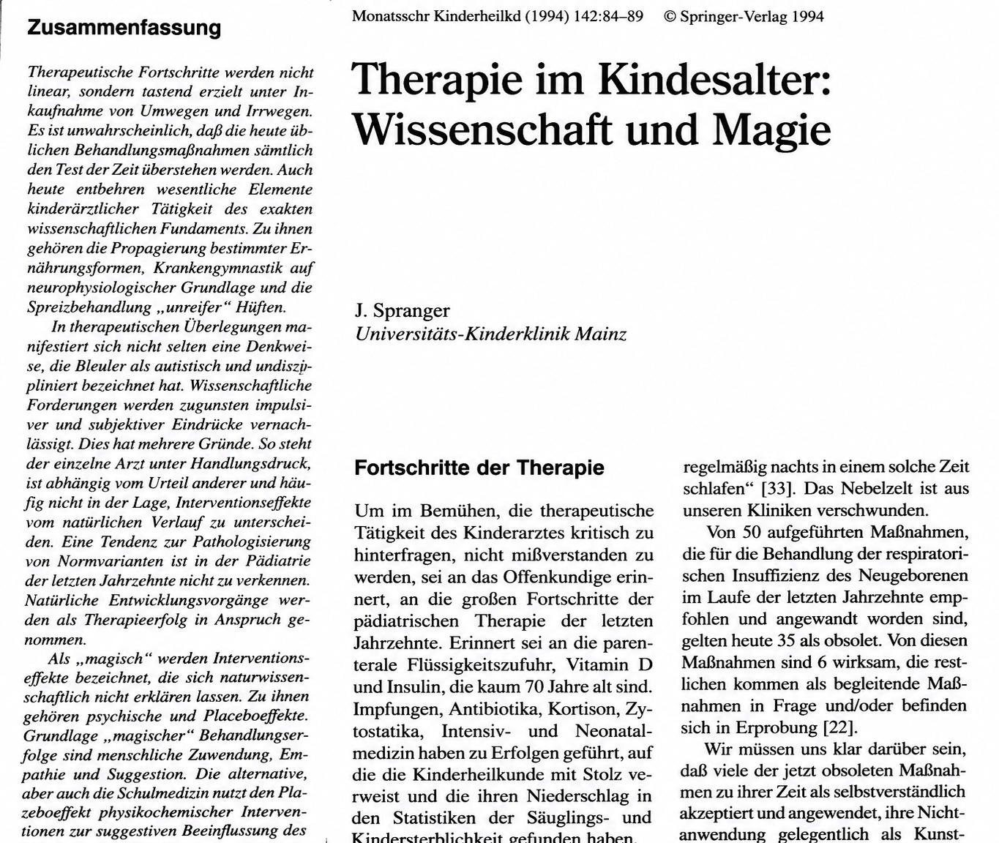

In Heidelberg wurde mir immer deutlicher, dass es einen gewaltigen Unterschied macht, ob man Medizin nur klinisch lernt oder ob man vorher einmal ernsthaft in die Grundlagenforschung eingetaucht ist. Damit meine ich nicht, dass ein guter Kliniker zwingend im Labor gestanden haben muss. Es gibt hervorragende Ärzte, die nie eine Zellkultur angefasst haben und vermutlich auch gut daran taten. Aber die Art zu denken verändert sich, wenn man längere Zeit versucht hat, biologische Vorgänge wirklich zu verstehen und nicht nur ihre Endergebnisse auswendig zu lernen.
Ich hatte diesen Unterschied in der Kinderklinik ständig vor Augen. Viele Kollegen waren klinisch erfahren und kannten ihre Abläufe. Sie wussten, welche Diagnose zu welchem Laborwert passte, welche Therapie bei welcher Erkrankung üblich war und welche Komplikation man erwarten musste. Das ist wichtig, keine Frage. Aber bei manchen hatte ich den Eindruck, dass sie Medizin wie einen großen Karteikasten betrieben. Wenn dieses Symptom, dann jene Diagnose. Wenn dieser Wert, dann diese Maßnahme. Das funktioniert im Alltag oft, aber es bleibt an der Oberfläche, wenn man nicht versteht, warum die Dinge so sind.
Für mich hatte die Zeit in der Forschung einen anderen Zugang geöffnet. Ich lernte Krankheiten nicht mehr nur als Listen von Symptomen, Laborwerten und Therapieschemata. Ich versuchte, das Prinzip dahinter zu verstehen. Wenn man den Mechanismus einer Erkrankung kennt, muss man sich vieles nicht mehr mühsam merken. Man kann es sich ableiten. Das klingt banal, ist aber im klinischen Alltag ein großer Unterschied. Vor allem dann, wenn die Situation nicht exakt so aussieht wie im Lehrbuch.
Ein einfaches Beispiel ist die Leukämie. Man kann natürlich auswendig lernen, dass Kinder mit Leukämie müde sind, bluten können, Infektionen bekommen und manchmal Knochenschmerzen haben. Das steht in jedem Lehrbuch. Wenn man aber verstanden hat, dass bei der Leukämie das Knochenmark durch bösartige Zellen verdrängt wird, dann ergibt sich vieles fast von selbst. Das Knochenmark kann nicht mehr ausreichend rote Blutkörperchen bilden, also entsteht eine Anämie, und das Kind wird blass und müde. Es entstehen zu wenig Blutplättchen, also kommt es zu Blutungen. Es entstehen zwar viele weiße Zellen, aber sie sind funktionell minderwertig, also wird das Kind infektanfällig. Plötzlich ist das keine Liste mehr, sondern eine innere Logik.
Genau diese innere Logik interessierte mich. Ich wollte nicht nur wissen, dass etwas so war, sondern warum es so war. In der Forschung wird man ständig gezwungen, diese Frage zu stellen. Ein Messwert ist kein Dogma. Er ist zunächst nur ein Messwert. Man fragt: Stimmt er? Ist er reproduzierbar? Gibt es eine Kontrolle? Gibt es eine alternative Erklärung? Kann das Ergebnis auch ein Artefakt sein? Diese Art von Misstrauen gegenüber der ersten Erklärung ist in der Medizin sehr nützlich. Sie schützt vor Routine, vor Denkfaulheit und manchmal auch vor gefährlicher Selbstsicherheit.
In der Klinik wurde diese Denkweise nicht immer geschätzt. Wer nach Mechanismen fragt, wirkt leicht unbequem. Wer wissen will, ob eine Maßnahme wirklich notwendig ist, gilt schnell als jemand, der sich querstellt. Ich erinnere mich an Kollegen, die ungeheure Mengen an Laborwerten ankreuzten, einfach weil man an einer Universitätsklinik war. Als wäre die Universitätsmedizin dadurch definiert, dass man möglichst viele Kästchen auf einem Laborzettel markiert. Für mich war das keine Wissenschaftlichkeit, sondern Verschwendung mit akademischem Etikett.
Das heißt nicht, dass ich selbst immer recht hatte. Im Gegenteil. Gerade am Anfang meiner klinischen Ausbildung wusste ich vieles nicht und machte genug Fehler. Ich war in der Klinik oft unsicher und musste mir vor der Morgenbesprechung notieren, was ich sagen wollte, damit ich nicht ins Schwimmen geriet. Aber ich hatte gelernt, Unsicherheit nicht dadurch zu bekämpfen, dass man so tut, als wisse man alles. Ich versuchte, mir die Dinge zu erschließen. Manchmal gelang das, manchmal nicht. Aber es war eine andere Form des Lernens.
Die Grundlagenforschung hatte mir auch gezeigt, dass medizinisches Wissen vorläufig ist. Was heute als richtig gilt, kann morgen ergänzt, relativiert oder verworfen werden. Das ist keine Schwäche der Medizin, sondern ihre Stärke, solange man bereit ist, neue Erkenntnisse ernst zu nehmen. Wer Medizin nur als Sammlung fester Regeln versteht, gerät in Schwierigkeiten, sobald sich die Regeln ändern. Wer Prinzipien verstanden hat, kann mit Veränderungen besser umgehen.

Dieser Blick prägte später auch meine Art zu führen. Ich mochte keine Besprechungen, in denen Autorität wichtiger war als Argumente. Ich mochte keine Visiten, bei denen Oberärzte vor Schwestern und Assistenten wissenschaftliche Fachgespräche führten, um sich gegenseitig zu zeigen, wie viel sie wussten. Wenn man etwas fachlich klären musste, konnte man das im kleinen Kreis tun. Die entscheidende Frage war für mich immer: Was hilft dem Patienten, was hilft der Station, was bringt die Sache voran? Der Rest war oft akademisches Theater.
In Heidelberg war ich damit nicht immer gut aufgehoben. Die Klinik war hierarchisch, viele Menschen verteidigten ihre Reviere, und wer von außen kam, aus den USA, aus dem Labor, mit anderen Fragen und anderem Selbstverständnis, wurde nicht automatisch umarmt. Aber gerade diese Reibung schärfte meinen Blick. Ich sah, wie Medizin aussah, wenn sie zu sehr auf Autorität, Gewohnheit und Status beruhte. Und ich merkte, wie sehr ich eine andere Medizin wollte: begründet, neugierig, pragmatisch und nicht unnötig aufgeblasen.
Vielleicht war das die wichtigste Wirkung der Forschung auf mich. Sie machte mich nicht zum besseren Menschen und auch nicht automatisch zum besseren Arzt. Aber sie gab mir ein Werkzeug: die Gewohnheit, nach Zusammenhängen zu suchen. Dieses Werkzeug half mir später überall. In Marburg, in Essen, in Göttingen und besonders in Berlin, wo ich längst nicht mehr im Labor stand, aber immer noch so dachte. Ich hatte aufgehört, Pipetten zu halten. Aber ich hatte nicht aufgehört, mir die Medizin aus ihren Mechanismen heraus zu erklären.